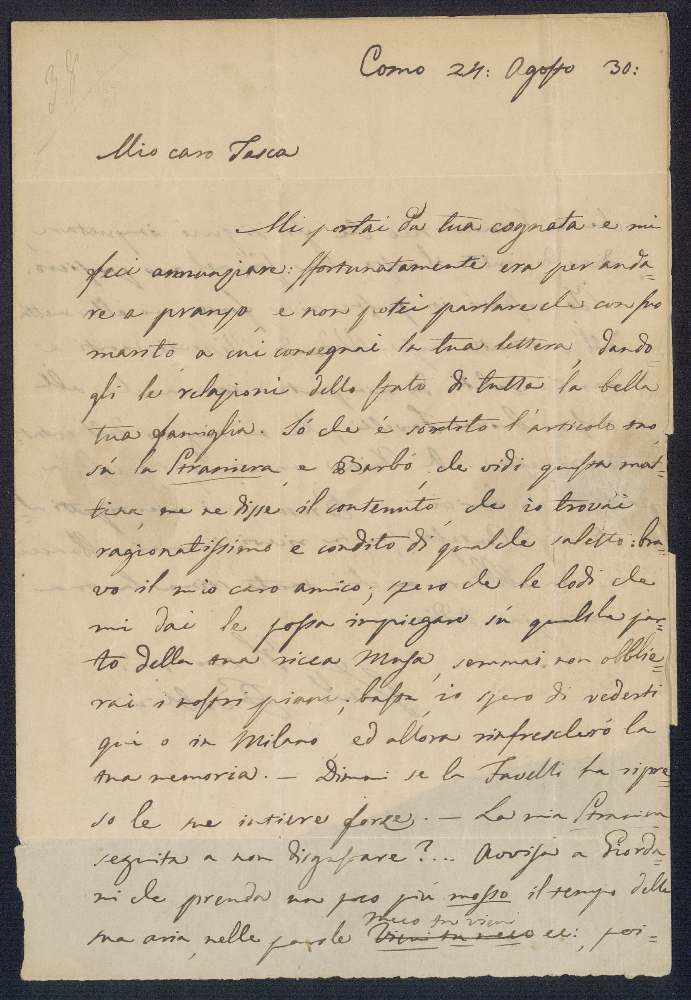
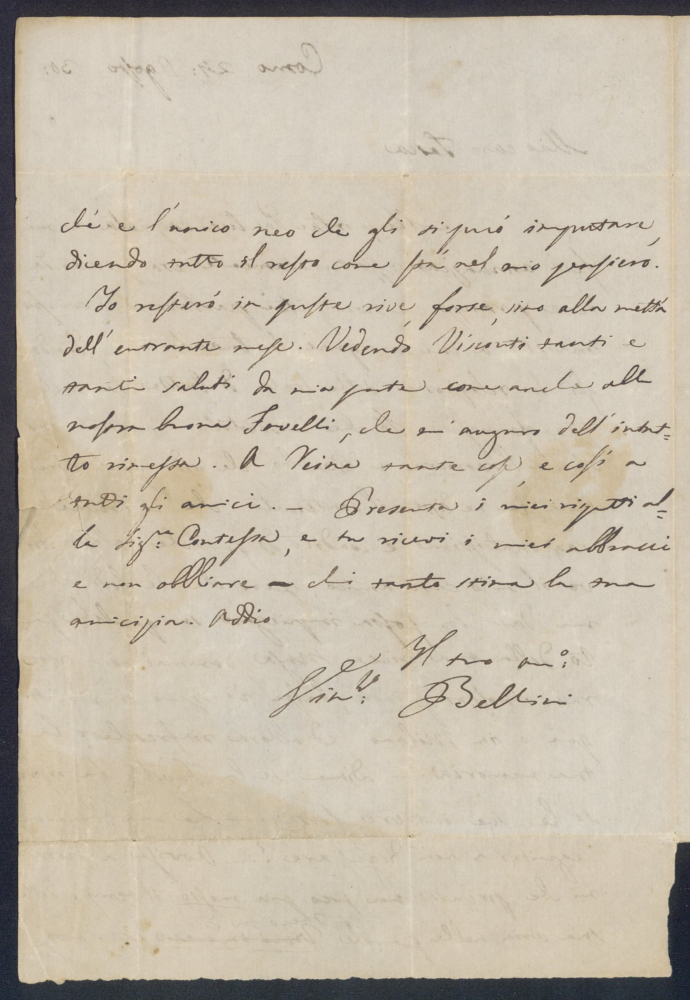
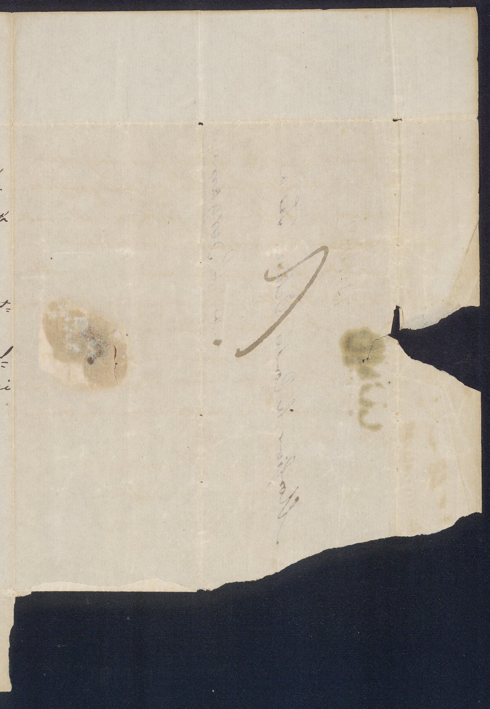
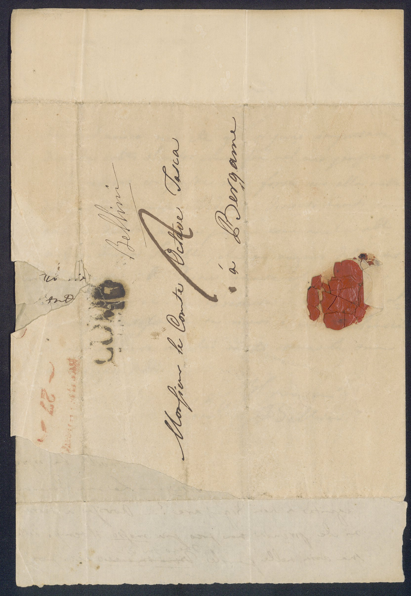

⠀
Seleziona Tag
- Person
- Place
- Term
- Work
- 1
- 2
- 3
- 4
- 
- 
- 
- 
Trascrizione della lettera
1° foglio
38
1 Como
Stato: Italia
24: agosto 30:
2 Mio caro Tasca
Nome: Ottavio Tasca, conte (1795 - 1872)
Ruolo: scrittore
1
Ruolo: scrittore
3 Mi portai da tua cognata
Cognata di Ottavio Tasca
e mi
4 feci annunziare: sfortunatamente era per anda
5 re a pranzo, e non potei parlare che con suo
6 marito
Marito della cognata di Ottavio Tasca
, a cui consegnai la tua lettera, dando
7 gli le relazioni dello stato di tutta la bella
8 tua famiglia. Sò che è sortito l’articolo tuo
9 sù la Straniera
Compositore: Vincenzo Bellini
Librettista: Felice Romani
Teatro: Teatro alla Scala
Luogo: Milano
Data: 14 febbraio 1829
, e BarbòLibrettista: Felice Romani
Teatro: Teatro alla Scala
Luogo: Milano
Data: 14 febbraio 1829
Nome: Giacomo Barbò, conte di Castelmorano (1786 - 1849)
Ruolo: scrittore
, che vidi questa mat
Ruolo: scrittore
10 tina, me ne disse il contenuto, che io trovai
11 ragionatissimo e condito di qualche saletto: bra
12 vo il mio caro amico
Nome: Ottavio Tasca, conte (1795 - 1872)
Ruolo: scrittore
; spero che le lodi che
Ruolo: scrittore
13 mi dai le possa impiegare sù qualche par
14 to della tua ricca Musa, semmai non obblie
15 rai i nostri piani; basta, io spero di vederti
16 qui o in Milano
Stato: Italia
, ed allora rinfrescherò la
17 tua memoria. – Dimmi se la Favelli
Nome:
Stefania
Favelli
(1800 - dopo il 1860)
Ruolo: soprano
ha ripre
Ruolo: soprano
18 so le sue intiere forze. – La mia Straniera
Compositore: Vincenzo Bellini
Librettista: Felice Romani
Teatro: Teatro alla Scala
Luogo: Milano
Data: 14 febbraio 1829
Librettista: Felice Romani
Teatro: Teatro alla Scala
Luogo: Milano
Data: 14 febbraio 1829
19 seguita a non disgustare?... Avvisa a Giorda
20 ni
Nome:
Giovanni
Giordani
(1801 - 1875)
Ruolo: basso
che prenda un poco più mosso il tempo della
Ruolo: basso
21 sua aria
Brano per voce sola appartenente a un’opera, oratorio , cantata o ad altro genere di teatro musicale (nel balletto solo strumentale). Il termine, usato già nel XIV sec. per indicare una melodia dal profilo ben riconoscibile, fu impiegato fin dalle origini dell’opera per designare sezioni cantabili che interrompevano la continuità del recitar cantando , sia per rappresentare realisticamente l’atto del cantare (“Vi ricorda o boschi ombrosi” nell’Orfeo, 1607), sia per esprimere uno sfogo affettivo del personaggio. Nell’opera italiana del pieno Ottocento prevalse anche nelle arie la struttura in più movimenti codificata dalle opere di Rossini (numero); questa articolazione favoriva l’integrazione dell’aria nell’azione drammatica in quanto prevedeva l’alternanza tra movimenti dinamici, in cui questa procede (scena[4] e tempo di mezzo), e momenti di stasi riflessiva (cantabile e cabaletta); la transizione tra i diversi momenti era spesso innescata dall’intervento di personaggi secondari (pertichino) che interloquivano col solista titolare dell’aria.
, nella parole 2° foglio
22 ché è l’unico neo che gli si può imputare,
23 dicendo tutto il resto come stà nel mio pensiero.
24 Io resterò in queste rive, forse, sino alla mettà
25 dell’entrante mese. Vedendo Visconti
Nome: Alessandro Visconti d'Aragona, Marchese d'Invorio (1785 - 6 gennaio 1851)
Ruolo:
tanti e
Ruolo:
26 tanti saluti da mia parte come anche alla
27 nostra buona Favelli
Nome:
Stefania
Favelli
(1800 - dopo il 1860)
Ruolo: soprano
, che mi auguro dell’intut
Ruolo: soprano
28 to rimessa. A Reina
Nome:
Domenico
Reina
(1796 - 1843)
Ruolo: tenore
tante cose, e così a
Ruolo: tenore
29 tutti gli amici. – Presenta i miei rispetti al
30 la Sig:ra (Exten.: Signora) Contessa
Nome:
Domenico
Reina
(1796 - 1843)
Ruolo: tenore
, e tu ricevi i miei abbracci
Ruolo: tenore
31 e non obbliare a chi tanto stima la tua
32 amicizia. Addio
33 Il tuo am:o (Exten.: amico)
34 Vin:zo (Exten.: Vicenzo) Bellini
Nome: Vincenzo Bellini, Il Cigno, Cavaliere della Legione d'onore (3 novembre 1801 - 23 settembre 1835)
Ruolo: compositore
Ruolo: compositore
3° foglio
4° foglio
COMOStato: Italia
BergamoStato: Italia
27
agosto 1830
1 Monsieur le Comte Octave Tasca
Nome: Ottavio Tasca, conte (1795 - 1872)
Ruolo: scrittore
Ruolo: scrittore
2 à Bergame
Stato: Italia
⠀